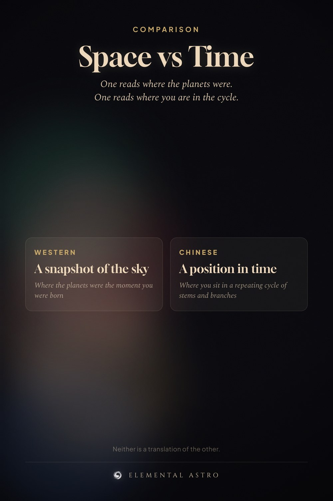

Western astrology reads the sky at the moment you were born. Chinese astrology reads the calendar — the year, month, day and hour as a set of stems and branches. One is a snapshot of space. The other is a position in a repeating cycle of time. Neither is the other’s translation. Chinese vs western astrology, Chinese astrology explained.
https://www.elementalastro.io/chinese-astrology